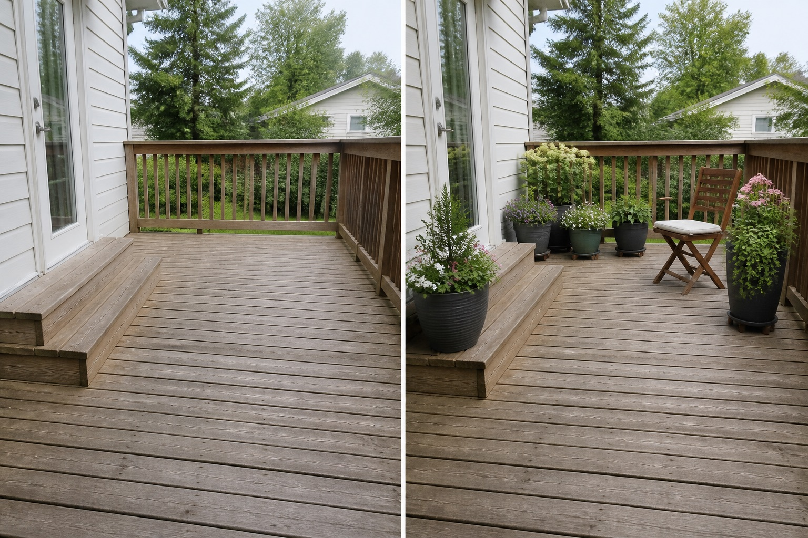

Keep door-to-step movement open
The primary route remains visually empty so everyday access does not weave between pots.
Start with the house door, steps, railing, drainage gaps, and the path people already take. Group a few movable containers outside that route, then test one seat before adding more weight or clutter.
Editorially reviewed August 14, 2026.
This AI-generated comparison is visual inspiration, not a measured plan, specification, safety assessment, cost estimate, local approval, plant recommendation, or construction guarantee.

The primary route remains visually empty so everyday access does not weave between pots.
A few container groups create depth without making every railing edge a continuous row.
A folding chair gives the deck a use while keeping the arrangement easy to remove for cleaning and inspection.
The concept keeps the deck boards, framing, railing, steps, house door, drainage gaps, level, and view. It does not assess structural capacity, waterproofing, guard safety, fixings, or container loads.
Verify ownership, permitted use, structural capacity, waterproofing condition, edge protection, emergency access, and building rules with appropriate qualified people before adding weight or fixtures.
Map outlets, falls, inspection points, equipment, doors, and maintenance routes. Containers and furniture must not conceal or obstruct them.
Record sun, reflected heat, wind, shade, and seasonal extremes. An image cannot establish wind stability, microclimate, or plant suitability.
Check how materials arrive, how containers are watered, where runoff goes, and how every item will be moved, cleaned, pruned, and stored.
Avoid covering board gaps, trapping moisture, placing containers on steps, attaching weight to railings, or assuming the deck can carry saturated containers. Stop for structural movement, decay, loose guards, drainage concerns, electrical work, or uncertain load capacity.
Only after capacity and maintenance needs are verified, place movable containers outside door, stair, and circulation zones while preserving access to boards, rails, and drainage gaps.
No. Capacity requires site-specific structural information and qualified assessment.
Choose one use, leave the main route open, group containers, repeat a limited palette, and stop before every edge is occupied.
Upload a level, wide photo to compare restrained concepts before making physical changes.
AI-generated visualizations are concepts. Verify measurements, conditions, drainage, access, structure, utilities, local rules, product information, plant suitability, and professional requirements before buying or building.